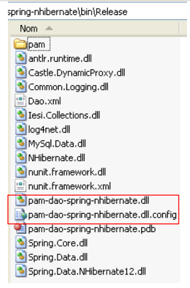
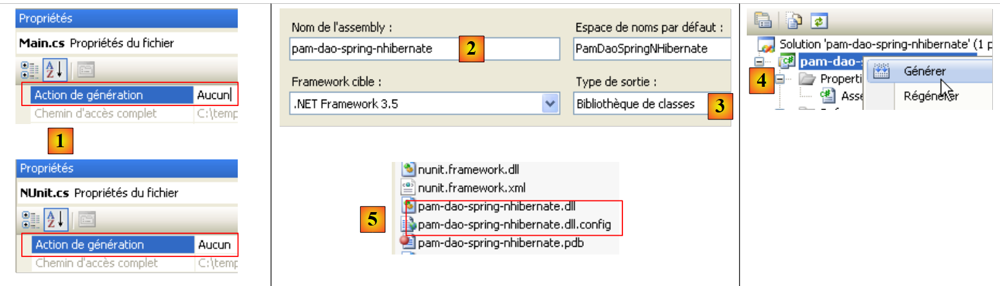
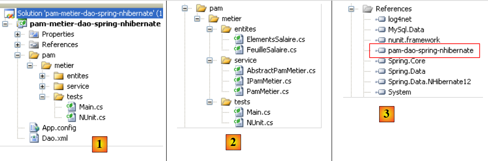

13. التطبيق [SimuPaie] – الإصدار 9 – تكامل Spring / NHibernate
نقترح هنا استئناف تطبيق ASP.NET ثلاثي الطبقات من الإصدار 7 [pam-v7-3tier-nhibernate-multivues-multipages]. كانت بنية التطبيق الطبقية كما يلي:
 |
فيما سبق، تم تنفيذ الطبقة [dao] باستخدام إطار العمل NHibernate. لم يتم استخدام إطار عمل Spring إلا لتكامل الطبقات فيما بينها. يوفر إطار عمل Spring فئات مساعدة للعمل مع إطار عمل Nhibernate. إن استخدام هذه الفئات يجعل كتابة كود الطبقة [dao] أسهل. تتطور البنية السابقة على النحو التالي:
 |
بسبب بنية الطبقات المستخدمة، يؤدي استخدام تكامل Spring / NHibernate إلى تعديل الطبقة [dao] فقط. لن تكون هناك حاجة لتعديل الطبقات [presentation] (web / ASP.NET) و [metier]. وهذه هي الميزة الرئيسية للبنى الطبقية المدمجة بواسطة Spring.
في ما يلي، سنقوم ببناء الطبقة [dao] مع [Spring / NHibernate] من خلال شرح كود حل وظيفي. لن نسعى إلى تقديم جميع إمكانيات تكوين أو استخدام إطار العمل [Spring / Nhibernate]. يمكن للقارئ تكييف الحل المقترح مع مشكلاته الخاصة بالاستعانة بوثائق Spring.NET و [http://www.springframework.net/documentation.html] (يونيو 2010).
النهج المتبع لبناء الطبقات [dao] و [metier] هو نهج الإصدار 3 الموصوف في الفقرة 7. أما النهج المتبع للطبقة [présentation] فهو نهج الإصدار 7 الموصوف في الفقرة 11.
13.1. طبقة [dao] للوصول إلى البيانات
 |
13.1.1. مشروع Visual Studio C# للطبقة [dao]
مشروع Visual Studio للطبقة [dao] هو التالي:
 |
- في [1]، المشروع بأكمله
- يحتوي المجلد [pam] على فئات المشروع بالإضافة إلى تكوين الكيانات NHibernate
- تقوم الملفات [App.config] و [Dao.xml] بتكوين إطار عمل Spring / NHibernate. سيتعين علينا وصف محتوى هذين الملفين.
- في [2]، الفئات المختلفة للمشروع
- في المجلد [entites] نجد الكيانات NHibernate التي تمت دراستها في المشروع [pam-dao-nhibernate]
- في المجلد [service]، نجد الواجهة [IPamDao] وتطبيقها باستخدام إطار العمل Spring / NHibernate [PamDaoSpringNHibernate]. سيتعين علينا كتابة هذا التنفيذ الجديد للواجهة [IPamDao]
- يحتوي الملف [tests] على نفس الاختبارات الموجودة في المشروع [pam-dao-nhibernate]. وهي تختبر نفس الواجهة [IPamdao].
- في [3]، مراجع المشروع. يتطلب تكامل Spring / NHibernate اثنين جديدين DLL [Spring.Data] و [Spring.Data.NHibernate12]. هذه المكونات متوفرة في إطار العمل. وقد تمت إضافتها إلى مجلد:
 |
في المراجع [3] للمشروع، توجد المراجع DLL التالية:
- NHibernate: لـ ORM NHibernate
- MySql.Data: برنامج التشغيل ADO.NET الخاص بـ SGBD MySQL
- Spring.Core: لإطار عمل Spring الذي يضمن تكامل الطبقات
- log4net: مكتبة سجلات
- nunit.framework: مكتبة للاختبارات الفردية
- Spring.Data و Spring.Data.NHibernate12: يضمنان دعم Spring / NHibernate.
تم أخذ هذه المراجع من المجلد [lib] [4]. يجب التأكد من أن خاصية "نسخة محلية" لجميع هذه المراجع مضبوطة على "True" [5]:
13.1.2. تكوين مشروع C#
يتم تكوين المشروع على النحو التالي:
 |
- في [1]، اسم تجميع المشروع هو [pam-dao-spring-nhibernate]. يظهر هذا الاسم في ملفات تكوين المشروع المختلفة.
13.1.3. كيانات الطبقة [dao]
 |
تم تجميع الكيانات (الكائنات) اللازمة للطبقة [dao] في المجلد [entites] [1] الخاص بالمشروع. هذه الكيانات هي نفسها الموجودة في المشروع [pam-dao-nhibernate] مع اختلاف بسيط في ملفات التكوين NHibernate. لنأخذ على سبيل المثال الملف [Employe.hbm.xml]:
- في [2]، تم تكوين الملف ليتم تضمينه في تجميع المشروع
محتواه هو كما يلي:
<?xml version="1.0" encoding="utf-8" ?>
<hibernate-mapping xmlns="urn:nhibernate-mapping-2.2"
namespace="Pam.Dao.Entites" assembly="pam-dao-spring-nhibernate">
<class name="Employe" table="EMPLOYES">
<id name="Id" column="ID">
<generator class="native" />
</id>
<version name="Version" column="VERSION"/>
<property name="SS" column="SS" length="15" not-null="true" unique="true"/>
<property name="Nom" column="NOM" length="30" not-null="true"/>
<property name="Prenom" column="PRENOM" length="20" not-null="true"/>
<property name="Adresse" column="ADRESSE" length="50" not-null="true" />
<property name="Ville" column="VILLE" length="30" not-null="true"/>
<property name="CodePostal" column="CP" length="5" not-null="true"/>
<many-to-one name="Indemnites" column="INDEMNITE_ID" cascade="all" lazy="false"/>
</class>
</hibernate-mapping>
- السطر 2: يشير السمة assembly إلى أن الملف [Employe.hbm.xml] سيتم العثور عليه في التجميع [pam-dao-spring-nhibernate]
13.1.4. تكوين Spring / NHibernate
لنعد إلى مشروع Visual C#:
 |
- في [1]، تقوم الملفات [App.config] و [Dao.xml] بتكوين تكامل Spring / NHibernate
13.1.4.1. الملف [App.config]
الملف [App.config] هو التالي:
<?xml version="1.0" encoding="utf-8" ?>
<configuration>
<!-- أقسام التكوين -->
<configSections>
<sectionGroup name="spring">
<section name="parsers" type="Spring.Context.Support.NamespaceParsersSectionHandler, Spring.Core" />
<section name="objects" type="Spring.Context.Support.DefaultSectionHandler, Spring.Core" />
<section name="context" type="Spring.Context.Support.ContextHandler, Spring.Core" />
</sectionGroup>
<section name="log4net" type="log4net.Config.Log4NetConfigurationSectionHandler,log4net" />
</configSections>
<!-- تكوين Spring -->
<spring>
<parsers>
<parser type="Spring.Data.Config.DatabaseNamespaceParser, Spring.Data" />
</parsers>
<context>
<resource uri="Dao.xml" />
</context>
</spring>
<!-- يحتوي هذا القسم على إعدادات تكوين log4net -->
<!-- NOTE IMPORTANTE: السجلات غير نشطة بشكل افتراضي. يجب تفعيلها برمجيًا
avec l'instruction log4net.Config.XmlConfigurator.Configure();
! -->
<log4net>
<appender name="ConsoleAppender" type="log4net.Appender.ConsoleAppender">
<layout type="log4net.Layout.PatternLayout">
<conversionPattern value="%-5level %logger - %message%newline" />
</layout>
</appender>
<!-- اضبط مستوى التسجيل الافتراضي على DEBUG -->
<root>
<level value="DEBUG" />
<appender-ref ref="ConsoleAppender" />
</root>
<!-- تعيين التسجيل لـ Spring. تتوافق أسماء المسجلات في Spring مع مساحة الاسم -->
<logger name="Spring">
<level value="INFO" />
</logger>
<logger name="Spring.Data">
<level value="DEBUG" />
</logger>
<logger name="NHibernate">
<level value="DEBUG" />
</logger>
</log4net>
</configuration>
الملف [App.config] أعلاه يقوم بتكوين Spring (الأسطر 5-9، 15-22)، و log4net (السطر 10، الأسطر 28-53) ولكن ليس NHibernate. لا يتم تكوين كائنات Spring في [App.config] بل في الملف [Dao.xml] (السطر 20). وبالتالي، سيتم العثور على تكوين Spring / NHibernate الذي يتكون من إعلان كائنات Spring معينة في هذا الملف.
13.1.4.2. الملف [Dao.xml]
الملف [Dao.xml] الذي يجمع الكائنات التي يديرها Spring هو التالي:
<?xml version="1.0" encoding="utf-8" ?>
<objects xmlns="http://www.springframework.net"
xmlns:db="http://www.springframework.net/database">
<!-- يُشار إليه بواسطة ملف تكوين سياق التطبيق الرئيسي -->
<description>
Application Spring / NHibernate
</description>
<!-- قاعدة البيانات وتكوين NHibernate -->
<db:provider id="DbProvider"
provider="MySql.Data.MySqlClient"
connectionString="Server=localhost;Database=dbpam_nhibernate;Uid=root;Pwd=;"/>
<object id="NHibernateSessionFactory" type="Spring.Data.NHibernate.LocalSessionFactoryObject, Spring.Data.NHibernate12">
<property name="DbProvider" ref="DbProvider"/>
<property name="MappingAssemblies">
<list>
<value>pam-dao-spring-nhibernate</value>
</list>
</property>
<property name="HibernateProperties">
<dictionary>
<entry key="hibernate.dialect" value="NHibernate.Dialect.MySQLDialect"/>
<entry key="hibernate.show_sql" value="false"/>
</dictionary>
</property>
<property name="ExposeTransactionAwareSessionFactory" value="true" />
</object>
<!-- مدير المعاملات -->
<object id="transactionManager"
type="Spring.Data.NHibernate.HibernateTransactionManager, Spring.Data.NHibernate12">
<property name="DbProvider" ref="DbProvider"/>
<property name="SessionFactory" ref="NHibernateSessionFactory"/>
</object>
<!-- قالب Hibernate -->
<object id="HibernateTemplate" type="Spring.Data.NHibernate.Generic.HibernateTemplate">
<property name="SessionFactory" ref="NHibernateSessionFactory" />
<property name="TemplateFlushMode" value="Auto" />
<property name="CacheQueries" value="true" />
</object>
<!-- كائنات الوصول إلى البيانات -->
<object id="pamdao" type="Pam.Dao.Service.PamDaoSpringNHibernate, pam-dao-spring-nhibernate" init-method="init" destroy-method="destroy">
<property name="HibernateTemplate" ref="HibernateTemplate"/>
</object>
</objects>
- تقوم الأسطر 11-13 بتكوين الاتصال بقاعدة البيانات [dbpam_nhibernate]. ويوجد فيها:
- المزود ADO.NET الضروري للاتصال، وهو هنا مزود SGBD MySQL. وهذا يعني وجود DLL و [Mysql.Data] في مراجع المشروع.
- سلسلة الاتصال بقاعدة البيانات (الخادم، اسم قاعدة البيانات، مالك الاتصال، كلمة المرور الخاصة به)
- تقوم الأسطر 15-29 بتكوين SessionFactory من NHibernate، وهو الكائن المستخدم للحصول على جلسات NHibernate. يُذكر أن أي عملية على قاعدة البيانات تتم داخل جلسة NHibernate. في السطر 15، يمكن ملاحظة أن SessionFactory يتم تنفيذه بواسطة فئة Spring Spring.Data.NHibernate.LocalSessionFactoryObject الموجودة في DLL Spring.Data.NHibernate12.
- السطر 16: تحدد الخاصية DbProvider معلمات الاتصال بقاعدة البيانات (المزود ADO.NET وسلسلة الاتصال). هنا تشير هذه الخاصية إلى الكائن DbProvider المحدد سابقًا في الأسطر 11-13.
- الأسطر 17-20: تحدد قائمة التجميعات التي تحتوي على ملفات [*.hbm.xml] التي تكوّن الكيانات التي يديرها NHibernate. تشير السطر 19 إلى أن هذه الملفات ستوجد في تجميع المشروع. نذكر أن هذا الاسم موجود في خصائص مشروع C#. نذكر أيضًا أن جميع ملفات [*.hbm.xml] قد تم تكوينها ليتم تضمينها في تجميع المشروع.
- الأسطر 22-27: خصائص محددة لـ NHibernate.
- السطر 24: ستكون لهجة SQL المستخدمة هي لهجة MySQL
- السطر 25: لن يظهر SQL الصادر عن NHibernate في سجلات وحدة التحكم. تعيين هذه الخاصية إلى true يسمح بمعرفة أوامر SQL الصادرة عن NHibernate. وهذا قد يساعد في فهم سبب بطء أحد التطبيقات عند الوصول إلى قاعدة البيانات، على سبيل المثال.
- السطر 28: ستؤدي الخاصية ExposeTransactionAwareSessionFactory إلى true إلى قيام Spring بإدارة تعليقات إدارة المعاملات التي سيتم العثور عليها في كود C#. سنعود إلى هذا الموضوع عندما نكتب الفئة التي تنفذ الطبقة [dao].
- تحدد الأسطر 32-36 مدير المعاملات. ومرة أخرى، هذا المدير هو فئة Spring من DLL Spring.Data.NHibernate12. يحتاج هذا المدير إلى معرفة معلمات الاتصال بقاعدة البيانات (السطر 34) وكذلك SessionFactory من NHibernate (السطر 35).
- تحدد الأسطر 39-43 خصائص فئة HibernateTemplate، وهي أيضًا فئة من Spring. ستُستخدم هذه الفئة كفئة مساعدة في الفئة التي تنفذ الطبقة [dao]. وهي تسهل التفاعلات مع كائنات NHibernate. تحتوي هذه الفئة على بعض الخصائص التي يجب تهيئتها:
- السطر 40: SessionFactory من NHibernate
- السطر 41: تحدد الخاصية TemplateFlushMode وضع مزامنة سياق الاستمرارية NHibernate مع قاعدة البيانات. يؤدي الوضع Auto إلى إجراء المزامنة:
- في نهاية المعاملة
- قبل عملية select
- السطر 42: سيتم تخزين استعلامات HQL (لغة استعلام Hibernate) في ذاكرة التخزين المؤقت. وقد يؤدي ذلك إلى تحسين الأداء.
- الأسطر 46-48 تحدد فئة تنفيذ الطبقة [dao]
- السطر 46: سيتم تنفيذ الطبقة [dao] بواسطة الفئة [PamdaoSpringNHibernate] من DLL [pam-dao-spring-nhibernate]. بعد إنشاء مثيل للفئة، سيتم تنفيذ الطريقة init الخاصة بالفئة على الفور. عند إغلاق حاوية Spring، سيتم تنفيذ الطريقة destroy الخاصة بالفئة.
- السطر 47: ستحتوي الفئة [PamDaoSpringNHibernate] على خاصية HibernateTemplate التي سيتم تهيئتها باستخدام الخاصية HibernateTemplate الموجودة في السطر 39.
13.1.5. تنفيذ الطبقة [dao]
13.1.5.1. هيكل الفئة التنفيذية
الواجهة [IPamDao] هي نفسها الموجودة في المشروع [pam-dao-nhibernate]:
using Pam.Dao.Entites;
namespace Pam.Dao.Service {
public interface IPamDao {
// قائمة بجميع هويات الموظفين
Employe[] GetAllIdentitesEmployes();
// موظف معين مع مستحقاته
Employe GetEmploye(string ss);
// قائمة بجميع الاشتراكات
Cotisations GetCotisations();
}
}
- السطر 1: يتم استيراد مساحة أسماء كيانات الطبقة [dao].
- السطر 3: الطبقة [dao] موجودة في مساحة الاسم [Pam.Dao.Service]. يمكن إنشاء عناصر مساحة الاسم [Pam.Dao.Entites] في عدة نسخ. يتم إنشاء عناصر مساحة الاسم [Pam.Dao.Service] في نسخة واحدة (singleton). وهذا ما برر اختيار أسماء مساحات الأسماء.
- السطر 4: تسمى الواجهة [IPamDao]. وهي تحدد ثلاث طرق:
- السطر 6، [GetAllIdentitesEmployes] تُرجع مصفوفة من الكائنات من النوع [Employe] التي تمثل قائمة المربيات في شكل مبسط (الاسم، الاسم الأول، SS).
- السطر 8، [GetEmploye] تُرجع كائن [Employe]: الموظف الذي يحمل رقم الضمان الاجتماعي الذي تم تمريره كمعلمة إلى الطريقة مع التعويضات المرتبطة بمؤشره.
- السطر 10، [GetCotisations] يُرجع الكائن [Cotisations] الذي يغلف معدلات الاشتراكات الاجتماعية المختلفة التي يجب خصمها من الراتب الإجمالي.
قد يكون الهيكل الأساسي لفئة تنفيذ هذه الواجهة مع دعم Spring / NHibernate كما يلي:
using System;
using System.Collections;
using System.Collections.Generic;
using Pam.Dao.Entites;
using Spring.Data.NHibernate.Generic.Support;
using Spring.Transaction.Interceptor;
namespace Pam.Dao.Service {
public class PamDaoSpringNHibernate : HibernateDaoSupport, IPamDao {
// الحقول الخاصة
private Cotisations cotisations;
private Employe[] employes;
// تعيين
[Transaction(ReadOnly = true)]
public void init() {
...
}
// حذف الكائن
public void destroy() {
if (HibernateTemplate.SessionFactory != null) {
HibernateTemplate.SessionFactory.Close();
}
}
// قائمة بجميع هويات الموظفين
public Employe[] GetAllIdentitesEmployes() {
return employes;
}
// موظف معين مع مستحقاته
[Transaction(ReadOnly = true)]
public Employe GetEmploye(string ss) {
....
}
// قائمة الاشتراكات
public Cotisations GetCotisations() {
return cotisations;
}
}
}
- السطر 9: تنفذ الفئة [PamDaoSpringNHibernate] واجهة الطبقة [dao] [IPamDao] بشكل صحيح. كما أنها مشتقة من فئة Spring [HibernateDaoSupport]. تحتوي هذه الفئة على خاصية [HibernateTemplate] التي يتم تهيئتها بواسطة تكوين Spring الذي تم إجراؤه (السطر 2 أدناه):
<object id="pamdao" type="Pam.Dao.Service.PamDaoSpringNHibernate, pam-dao-spring-nhibernate" init-method="init" destroy-method="destroy">
<property name="HibernateTemplate" ref="HibernateTemplate"/>
</object>
- في السطر 1 أعلاه، نرى أن تعريف الكائن [pamdao] يشير إلى أن الطريقتين init و destroy من الفئة [PamDaoSpringNHibernate] يجب تنفيذهما في أوقات محددة. هاتان الطريقتان موجودتان بالفعل في الفئة في السطرين 16 و21.
- السطران 15 و34: تعليقات توضيحية تجعل الطريقة المُعلَّقة تُنفَّذ ضمن معاملة. يشير السمة ReadOnly=true إلى أن المعاملة هي للقراءة فقط. يمكن للطريقة التي يتم تنفيذها في المعاملة أن تطلق استثناءً. في هذه الحالة، يقوم Spring بإجراء Rollback تلقائي للمعاملة. يزيل هذا التعليق الحاجة إلى إدارة معاملة داخل الطريقة.
- السطر 16: يتم تنفيذ الطريقة init بواسطة Spring فور إنشاء مثيل للفئة. سنرى أن الغرض منها هو تهيئة الحقول الخاصة في السطرين 11 و12. وستتم هذه العملية ضمن معاملة (السطر 15).
- يتم تنفيذ طرق واجهة [IPamDao] في الأسطر 28 و35 و40.
- السطور 28-30: تقتصر الطريقة [GetAllIdentitesEmployes] على إرجاع السمة الموجودة في السطر 12 التي تم تهيئتها بواسطة الطريقة init.
- الأسطر 40-42: تقتصر طريقة [GetCotisations] على إرجاع السمة الموجودة في السطر 11 التي تم تهيئتها بواسطة الطريقة init.
13.1.5.2. الطرق المفيدة للفئة HibernateTemplate
سنستخدم الطرق التالية من الفئة HibernateTemplate:
IList<T> Find<T>(string requete_hql) | تنفذ الاستعلام HQL وتُرجع قائمة من الكائنات من النوع T |
IList<T> Find<T>(string requete_hql, object[]) | يُنفذ استعلام HQL الذي تم تعيين معلماته بواسطة ?. يتم توفير قيم هذه المعلمات من خلال مصفوفة الكائنات. |
IList<T> LoadAll<T>() | يعرض جميع الكيانات من النوع T |
هناك طرق أخرى مفيدة لن تتاح لنا الفرصة لاستخدامها تسمح بالبحث عن الكيانات وحفظها وتحديثها وحذفها:
T Load<T>(object id) | يضع في الجلسة NHibernate الكيان من النوع T الذي له المفتاح الأساسي id. |
void SaveOrUpdate(object entité) | تقوم بإدراج (INSERT) أو تحديث (UPDATE) الكائن entité حسب ما إذا كان هذا الكائن يحتوي على مفتاح أساسي (UPDATE) أم لا (INSERT). يمكن تكوين عدم وجود مفتاح أساسي بواسطة السمة unsaved-values في ملف تكوين الكيان. بعد العملية SaveOrUpdate، يكون الكائن entité موجودًا في الجلسة NHibernate. |
void Delete(object الكيان) | يحذف الكائن entité من الجلسة NHibernate. |
13.1.5.3. تنفيذ طريقة init
الطريقة init للفئة [PamDaoSpringNHibernate] هي، حسب التكوين، الطريقة التي يتم تنفيذها بعد إنشاء مثيل للفئة بواسطة Spring. والغرض منها هو تخزين الهويات المبسطة للموظفين (الاسم، الاسم الأول، SS) ومعدلات الاشتراكات في ذاكرة التخزين المؤقتة المحلية. وقد يكون كودها كما يلي.
[Transaction(ReadOnly = true)]
public void init() {
try {
// استرداد القائمة المبسطة للموظفين
IList<object[]> lignes = HibernateTemplate.Find<object[]>("select e.SS,e.Nom,e.Prenom from Employe e");
// وضعها في جدول
employes = new Employe[lignes.Count];
int i = 0;
foreach (object[] ligne in lignes) {
employes[i] = new Employe() { SS = ligne[0].ToString(), Nom = ligne[1].ToString(), Prenom = ligne[2].ToString() };
i++;
}
// نضع معدلات الاشتراكات في كائن
cotisations = (HibernateTemplate.LoadAll<Cotisations>())[0];
} catch (Exception ex) {
// تحويل الاستثناء
throw new PamException(string.Format("Erreur d'accès à la BD : [{0}]", ex.ToString()), 43);
}
}
- السطر 5: يتم تنفيذ استعلام HQL. يطلب هذا الاستعلام الحقول SS، الاسم، الاسم الأول لجميع الكيانات Employé. ويعرض قائمة من الكائنات. إذا كنا قد طلبنا جميع بيانات الموظف بالشكل "select e from Employe e"، لكنا حصلنا على قائمة من الكائنات من النوع Employe.
- الأسطر 7-12: يتم نسخ قائمة الكائنات هذه إلى مصفوفة من الكائنات من النوع Employe.
- السطر 14: نطلب قائمة بجميع الكيانات من النوع Cotisations. نعلم أن هذه القائمة تحتوي على عنصر واحد فقط. لذلك نسترد العنصر الأول من القائمة للحصول على معدلات الاشتراكات.
- تقوم السطران 7 و14 بتهيئة الحقلين الخاصين بالفئة.
13.1.5.4. تنفيذ الطريقة GetEmploye
يجب أن تعرض الطريقة GetEmploye الكيان "الموظف" الذي يحمل الرقم SS المحدد. قد يكون كودها كما يلي:
[Transaction(ReadOnly = true)]
public Employe GetEmploye(string ss) {
IList<Employe> employés = null;
try {
// الاستعلام
employés = HibernateTemplate.Find<Employe>("select e from Employe e where e.SS=?", new object[]{ss});
} catch (Exception ex) {
// يتم تحويل الاستثناء
throw new PamException(string.Format("Erreur d'accès à la BD lors de la demande de l'employé de n° ss [{0}] : [{1}]", ss, ex.ToString()), 41);
}
// هل تم استعادة موظف؟
if (employés.Count == 0) {
// يتم الإبلاغ عن الأمر
throw new PamException(string.Format("L'employé de n° ss [{0}] n'existe pas", ss), 42);
} else {
return employés[0];
}
}
- السطر 6: يحصل على قائمة الموظفين الذين يحملون رقم SS المحدد
- السطر 12: عادةً، إذا كان الموظف موجودًا، يجب الحصول على قائمة تحتوي على عنصر واحد
- السطر 14: إذا لم يكن الأمر كذلك، يتم إصدار استثناء
- السطر 16: إذا كان الأمر كذلك، يتم إرجاع الموظف الأول من القائمة
13.1.5.5. Conclusion
إذا قارنا كود الطبقة [dao] في حالة استخدام
- إطار العمل NHibernate
- من إطار العمل Spring / NHibernate
، ندرك أن الحل الثاني سمح بكتابة كود أبسط.
13.2. اختبارات الطبقة [dao]
13.2.1. مشروع Visual Studio
تم عرض مشروع Visual Studio بالفعل. دعونا نذكره:
 |
- في [1]، المشروع في مجمله
- في [2]، الفئات المختلفة للمشروع. يحتوي المجلد [tests] على اختبار وحدة التحكم [Main.cs] واختبار وحدة [NUnit.cs].
- في [3]، يتم ترجمة البرنامج [Main.cs].
 |
- في [4]، لم يتم إنشاء الملف [NUnit.cs].
- المشروع هو تطبيق وحدة التحكم. الفئة المنفذة هي تلك المحددة في [5]، وهي فئة الملف [Main.cs].
13.2.2. برنامج اختبار وحدة التحكم [Main.cs]
يتم تنفيذ برنامج الاختبار [Main.cs] في البنية التالية:
 |
وهو مسؤول عن اختبار أساليب واجهة [IPamDao]. قد يكون المثال الأساسي كما يلي:
using System;
using Pam.Dao.Entites;
using Pam.Dao.Service;
using Spring.Context.Support;
namespace Pam.Dao.Tests {
public class MainPamDaoTests {
public static void Main() {
try {
// إنشاء مثيل الطبقة [dao]
IPamDao pamDao = (IPamDao)ContextRegistry.GetContext().GetObject("pamdao");
// قائمة بهويات الموظفين
foreach (Employe Employe in pamDao.GetAllIdentitesEmployes()) {
Console.WriteLine(Employe.ToString());
}
// موظف مع مستحقاته
Console.WriteLine("------------------------------------");
Console.WriteLine(pamDao.GetEmploye("254104940426058"));
Console.WriteLine("------------------------------------");
// قائمة الاشتراكات
Cotisations cotisations = pamDao.GetCotisations();
Console.WriteLine(cotisations.ToString());
} catch (Exception ex) {
// عرض الاستثناء
Console.WriteLine(ex.ToString());
}
//استراحة
Console.ReadLine();
}
}
}
- السطر 11: يُطلب من Spring مرجعًا على الطبقة [dao].
- الأسطر 13-15: اختبار الطريقة [GetAllIdentitesEmployes] للواجهة [IPamDao]
- السطر 18: اختبار الطريقة [GetEmploye] للواجهة [IPamDao]
- السطر 21: اختبار الطريقة [GetCotisations] للواجهة [IPamDao]
يتم تكوين Spring و NHibernate و log4net بواسطة الملف [App.config] الذي تمت دراسته في الفقرة 13.1.4.1.
يؤدي التنفيذ باستخدام قاعدة البيانات الموضحة في الفقرة 6.2 إلى الحصول على النتيجة التالية في وحدة التحكم:
- السطران 1-2: الموظفان من النوع [Employe] مع المعلومات التالية فقط [SS, Nom, Prenom]
- السطر 4: الموظف من النوع [Employe] الذي يحمل رقم الضمان الاجتماعي [254104940426058]
- السطر 5: معدلات الاشتراكات
13.2.3. اختبارات وحدة مع NUnit
ننتقل الآن إلى اختبار فردي NUnit. سيتطور مشروع Visual Studio للطبقة [dao] على النحو التالي:
 |
- إلى [1]، وبرنامج الاختبار [NUnit.cs]
- إلى [2,3]، وسيُنشئ المشروع ملف DLL باسم [pam-dao-spring-nhibernate.dll]
- في [4]، الإشارة إلى DLL من إطار العمل NUnit: [nunit.framework.dll]
- إلى [5]، لن يتم تضمين الفئة [Main.cs] في DLL [pam-dao-spring-nhibernate]
- في [6]، سيتم تضمين الفئة [NUnit.cs] في DLL [pam-dao-spring-nhibernate]
فئة الاختبار NUnit هي كما يلي:
using System.Collections;
using NUnit.Framework;
using Pam.Dao.Service;
using Pam.Dao.Entites;
using Spring.Objects.Factory.Xml;
using Spring.Core.IO;
using Spring.Context.Support;
namespace Pam.Dao.Tests {
[TestFixture]
public class NunitPamDao : AssertionHelper {
// الطبقة [dao] المراد اختبارها
private IPamDao pamDao = null;
// المنشئ
public NunitPamDao() {
// إنشاء مثيل الطبقة [dao]
pamDao = (IPamDao)ContextRegistry.GetContext().GetObject("pamdao");
}
// التشغيل
[SetUp]
public void Init() {
}
[Test]
public void GetAllIdentitesEmployes() {
// التحقق من عدد الموظفين
Expect(2, EqualTo(pamDao.GetAllIdentitesEmployes().Length));
}
[Test]
public void GetCotisations() {
// التحقق من معدل الاشتراكات
Cotisations cotisations = pamDao.GetCotisations();
Expect(3.49, EqualTo(cotisations.CsgRds).Within(1E-06));
Expect(6.15, EqualTo(cotisations.Csgd).Within(1E-06));
Expect(9.39, EqualTo(cotisations.Secu).Within(1E-06));
Expect(7.88, EqualTo(cotisations.Retraite).Within(1E-06));
}
[Test]
public void GetEmployeIdemnites() {
// التحقق من الأفراد
Employe employe1 = pamDao.GetEmploye("254104940426058");
Employe employe2 = pamDao.GetEmploye("260124402111742");
Expect("Jouveinal", EqualTo(employe1.Nom));
Expect(2.1, EqualTo(employe1.Indemnites.BaseHeure).Within(1E-06));
Expect("Laverti", EqualTo(employe2.Nom));
Expect(1.93, EqualTo(employe2.Indemnites.BaseHeure).Within(1E-06));
}
[Test]
public void GetEmployeIdemnites2() {
// التحقق من عدم وجود الفرد
bool erreur = false;
try {
Employe employe1 = pamDao.GetEmploye("xx");
} catch {
erreur = true;
}
Expect(erreur, True);
}
}
}
تمت دراسة هذه الفئة بالفعل في الفقرة 7.3.4.
يؤدي إنشاء المشروع إلى إنشاء DLL و [pam-dao-spring-nhibernate.dll] في المجلد [bin/Release].
 |
يتم تحميل DLL [pam-dao-spring-nhibernate.dll] باستخدام الأداة [NUnit-Gui]، الإصدار 2.4.6، ويتم إجراء الاختبارات:
 |
فيما سبق، نجحت الاختبارات.
العمل العملي:
تنفيذ اختبارات الفئة [PamDaoSpringNHibernate] على الجهاز.- استخدام ملفات تكوين مختلفة لـ [Dao.xml] من أجل استخدام SGBD أخرى (Firebird، MySQL، Postgres، SQL Server)
13.2.4. إنشاء و DLL من الطبقة [dao]
بمجرد كتابة واختبار الفئة [PamDaoNHibernate]، سيتم إنشاء DLL من الطبقة [dao] بالطريقة التالية:
 |
- [1]، يتم استبعاد برامج الاختبار من تجميع المشروع
- [2,3]، تكوين المشروع
- [4]، إنشاء المشروع
- يتم إنشاء DLL في المجلد [bin/Release] [5]. نضيفه إلى ملفات DLL الموجودة بالفعل في المجلد [lib] [6]:
 |
13.3. طبقة الأعمال
لنعد إلى البنية العامة للتطبيق [SimuPaie]:
 |
نعتبر الآن أن الطبقة [dao] قد تم اكتسابها وأنها تم تغليفها في DLL [pam-dao-spring-nhibernate.dll]. ننتقل الآن إلى الطبقة [metier]. وهي التي تنفذ قواعد العمل، وفي هذه الحالة قواعد حساب الراتب.
قد يبدو مشروع Visual Studio للطبقة المهنية كما يلي:
 |
- في [1]، يتم تكوين المشروع بأكمله بواسطة الملفين [App.config] و [Dao.xml]. ملف [App.config] مطابق لما كان عليه في مشروع الطبقة [dao] [pam-dao-spring-nhibernate]. وينطبق الأمر نفسه على الملف [Dao.xml] باستثناء أنه يعلن عن كائن Spring إضافي برقم تعريف pammetier. إعلان هذا الأخير مطابق لما كان عليه في الملف [App.config] في مشروع [pam-metier-dao-nhibernate].
- في [2]، المجلد [pam] مطابق لما كان عليه في الطبقة [metier] للمشروع [pam-metier-dao-nhibernate]
- في [3] المراجع المستخدمة من قبل المشروع. تجدر الإشارة إلى DLL و [pam-dao-spring-nhibernate] من الطبقة [dao] التي تمت دراستها سابقًا.
السؤال: قم ببناء المشروع [pam-metier-dao-spring-nhibernate] أعلاه. سيتم اختباره بشكل منفصل:
-
في وضع وحدة التحكم بواسطة برنامج وحدة التحكم [Main.cs]
-
من خلال الاختبار الفردي [NUnit.cs] الذي يتم تنفيذه بواسطة إطار العمل NUnit
يمكن إنشاء المشروع الجديد [pam-metier-dao-spring-nhibernate] ببساطة عن طريق نسخ المشروع [pam-metier-dao-nhibernate] ثم تعديل العناصر التي يجب تغييرها.
بعد الاختبارات، سيتم إنشاء DLL من الطبقة [metier] والتي سنسميها [pam-metier-dao-spring-nhibernate]:
 |
- إلى [1]، ونجح اختبار NUnit
- إلى [2]، و DLL الذي تم إنشاؤه بواسطة المشروع
سنضيف DLL من الطبقة [metier] إلى DLL الموجودة بالفعل في المجلد [lib] [3]:
 |
13.4. الطبقة [web]
لنعد إلى البنية العامة للتطبيق [SimuPaie]:
 |
نعتبر أن الطبقتين [dao] و [métier] قد تم الحصول عليهما وتغليفهما في DLL و [pam-dao-spring-nhibernate, pam-metier-dao-spring-nhibernate]. سنقوم الآن بوصف طبقة الويب.
يتم الحصول على مشروع Visual Web Developer للطبقة [web] أولاً عن طريق نسخ مجلد مشروع الويب [pam-v7-3tier-nhibernate-multivues-multipages]. ثم يتم إعادة تسمية المشروع إلى [pam-v9-3tier-spring-nhibernate-multivues-multipages]:
 |
يختلف مشروع الويب الجديد [pam-v9-3tier-spring-nhibernate-multivues-multipages] عن مشروع [pam-v7-3tier-nhibernate-multivues-multipages] في النقاط التالية:
- في [1]، يتم تكوينه بواسطة الملفين [Dao.xml] و [Web.config]. لم يكن [Dao.xml] موجودًا في [pam-v7] ويجب أن يتضمن الملف [Web.config] تكوين Spring / NHibernate بينما في [pam-v7]، لم يكن يهيئ سوى NHibernate.
- في [2]، فإن ملفات DLL الخاصة بالطبقات [dao] و [metier] هي تلك التي قمنا بإنشائها للتو.
الملف [Dao.xml] هو الملف المستخدم في إنشاء الطبقة [metier]. الملف [Web.config] هو ملف [pam-v7] الذي أضيفت إليه تكوينات Spring / NHibernate التي كانت موجودة في ملفات [App.config] للطبقات [dao] و [metier]. الملف [Web.config] من [pam-v9] هو التالي:
<configuration>
<configSections>
<sectionGroup name="system.web.extensions" type="System.Web.Configuration.SystemWebExtensionsSectionGroup, System.Web.Extensions, Version=3.5.0.0, Culture=neutral, PublicKeyToken=31BF3856AD364E35">
........
</sectionGroup>
<sectionGroup name="spring">
<section name="parsers" type="Spring.Context.Support.NamespaceParsersSectionHandler, Spring.Core" />
<section name="objects" type="Spring.Context.Support.DefaultSectionHandler, Spring.Core" />
<section name="context" type="Spring.Context.Support.ContextHandler, Spring.Core" />
</sectionGroup>
<section name="log4net" type="log4net.Config.Log4NetConfigurationSectionHandler,log4net" />
</configSections>
<!-- تكوين Spring -->
<spring>
<parsers>
<parser type="Spring.Data.Config.DatabaseNamespaceParser, Spring.Data" />
</parsers>
<context>
<resource uri="~/Dao.xml" />
</context>
</spring>
............. le reste est identique au fichier [Web.config] de [pam-v7]
في الأسطر 7-11 و16-23، نجد تكوين Spring الذي كان موجودًا في الملفات [App.config] للطبقات [dao] و[metier] التي تم إنشاؤها سابقًا مع اختلاف واحد: في ملفات [App.config]، كان السطر 17 مكتوبًا على النحو التالي:
<resource uri="Dao.xml" />
مع التكوين التالي:
 |
يتم نسخ الملف [Dao.xml] إلى المجلد [bin] في مجلد مشروع الويب. باستخدام الصيغة
<resource uri="Dao.xml" />
سيتم البحث عن الملف [Dao.xml] في المجلد الحالي للعملية التي تقوم بتشغيل تطبيق الويب. ويصادف أن هذا المجلد ليس المجلد [bin] من مجلد مشروع الويب الذي يتم تشغيله. يجب كتابة:
<resource uri="~/Dao.xml" />
حتى يتم البحث عن الملف [Dao.xml] في المجلد [bin] ضمن مجلد مشروع الويب الذي يتم تنفيذه.
السؤال: تنفيذ هذا التطبيق الويب على الجهاز.
13.5. Conclusion
لقد انتقلنا من البنية:
 |
في مجال الهندسة المعمارية:
 |
كان الأمر يتعلق بتنفيذ الطبقة [dao] بالاستفادة من المزايا التي يوفرها دمج NHibernate بواسطة Spring.
وقد لاحظنا أن ذلك:
- أثر على الطبقة [dao]. كانت هذه الطبقة أسهل في الكتابة ولكنها تطلبت تكوينًا أكثر تعقيدًا لـ Spring.
- أثر بشكل هامشي على الطبقتين [metier] و [web]
كان هذا مثالاً آخر على أهمية البنى الطبقية.